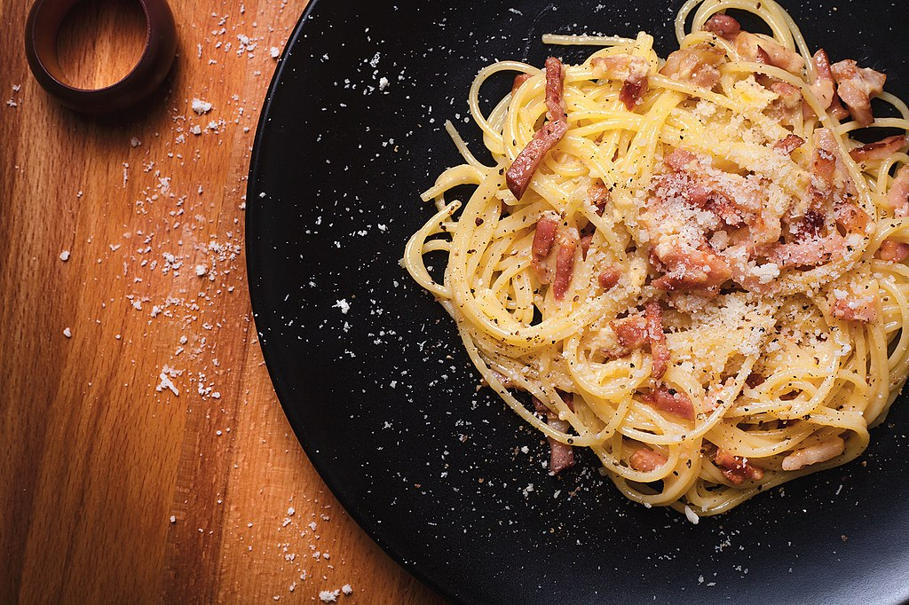

Spaghetti Carbonara

Carbonara is an Italian pasta dish from Rome made with eggs, hard cheese, cured pork and black pepper.
Ingredients
- Spaghetti
- Olive oil
- Bacon
- Onion
- Garlic
- White wine
- Eggs
- Parmesan cheese
- Salt and pepper
- Parsley
Steps
- Boil salted water over medium heat
- Add olive oil to bacon fat.Add chopped onion and cook until onion is translucent
- Add minced garlic and cook for 1 minute.Add wine and cook 1 more minute
- Return cooked bacon to the skillet; add cooked spaghetti. Toss to coat and heat through, adding more olive oil if it seems dry or sticks together. Add beaten eggs and cook, tossing constantly with tongs or a large fork, until eggs are barely set. Quickly add 1/2 cup Parmesan cheese and toss again. Season with salt and pepper
- Serve warm with chopped parsley sprinkled on top and extra Parmesan cheese at the table.